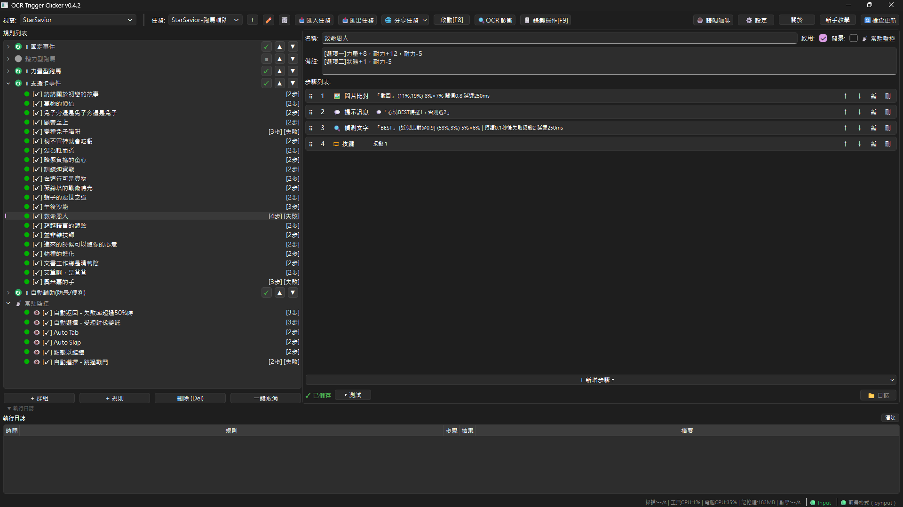
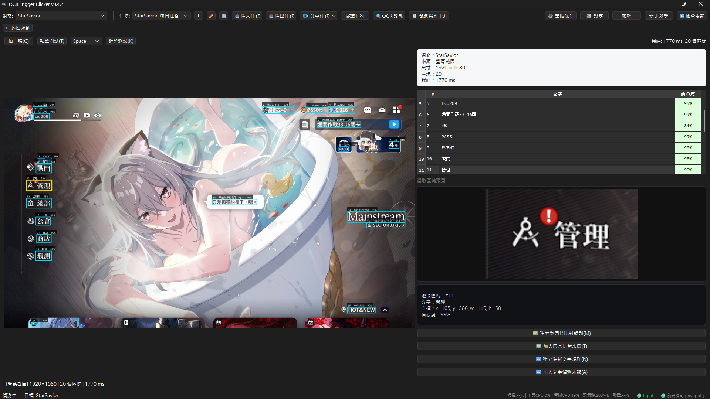

介面截圖
深色主題、中文介面，規則列表與步驟編輯一目瞭然。



免寫程式的 Windows 自動化工具 — 偵測螢幕文字後自動點擊與按鍵。支援繁中 / English UI、ROI 區域設定、圖像比對、多步驟流程。
先選你現在要做什麼
一套工具涵蓋文字偵測、圖像比對、流程編排與多任務管理。
基於 RapidOCR 引擎，支援繁體中文與簡體中文。可指定 ROI 精確比對，避免全螢幕干擾。
以圖找圖，支援多尺度搜尋與 NMS 篩選。適合無文字的按鈕或圖示辨識，效能比 OCR 快 10~50 倍。
每條規則由有序步驟組成：偵測、點擊、按鍵、等待、跳轉、數值比對、圖像比對、滾輪、拖曳。
不同場景（不同遊戲、不同表單）建立獨立任務，規則完全隔離，一鍵切換。
即時顯示目前視窗內所有可辨識文字及其位置與信心度，按兩下直接建立規則。
前景保護、系統托盤常駐、on_fail 通知與自動停止群組，長時間運行也安心。
按 F9 開始錄製，在遊戲裡點擊示範一遍，停止後自動轉成規則——不用一條條手動設定。
深色主題、中文介面，規則列表與步驟編輯一目瞭然。


從下載到啟動，最快 3 分鐘。
ocr-trigger-clicker.zip，解壓縮後執行 ocr-trigger-clicker.exe。每個工具都有專屬功能，搭配使用能大幅降低設定難度。
即時顯示目標視窗中所有可辨識的文字、位置與信心度。
ROI（Region of Interest）就是你要偵測的畫面範圍。範圍越小，速度越快、準確度越高。
選取你要點擊的精確位置。
以圖找圖，效能約為 OCR 的 10~50 倍，且不受背景文字干擾。建議優先選用。
不實際執行動作，先看規則會發生什麼事。
不知道怎麼設定規則？直接錄一遍，工具自動轉成規則——不用一條條手動設定。
⚠️ 本模式只記錄滑鼠點擊（左鍵／右鍵／中鍵）。鍵盤按鍵、拖曳、滾輪不會被錄製——錄製時想「等一下再點」就直接放慢手速，不要按鍵盤。
錄製小技巧：點在「有東西」的地方，轉換品質更好
💡 自動轉換：點在文字上 → 等文字出現再點擊；無文字但有圖示 → 圖示比對後點擊；空白處 → 固定等待後點擊。座標一律存為視窗比例，換螢幕／換解析度不用重設。
理解這三個原則，就能設計出大部分的腳本。
規則的步驟從上往下跑，但如果某一步失敗（on_fail 設「停止規則」），整條規則就結束，後面的步驟全部跳過。
所以：動作步驟一定要放在偵測後面，偵測失敗就不會誤觸發。
等待步驟放在偵測後面 → 只有偵測成功才會等待那幾毫秒。偵測失敗 → 等待直接跳過，不會卡住。
這是安全的設計，不用擔心等待會造成卡關。
背景規則每幀都跑，不受群組指標影響。適合做緊急攔截（例如出現錯誤訊息時立刻按掉）。
一般任務放在群組規則就好，不需要勾選「常駐監控」。
一條規則要「完成並進到下一條」，必須有實體動作步驟（點擊／按鍵／拖曳／滾輪）。如果只放「偵測＋通知(notify)」，規則會一直重複通知、卡在原地。
想做「各自出現就提醒」請改用「常駐監控」，想依序處理就加動作步驟。
以下四種模式涵蓋 80% 的使用場景。
偵測到特定文字 → 執行動作 → 等待畫面變化 → 再偵測。重複循環。
適用：遊戲日常 farming、表單重複填寫、批次處理。
背景規則每幀檢查，偵測到錯誤訊息就自動按掉。
適用：長時間運算時自動處理彈窗、遊戲掉線自動重連。
偵測特定數字，超過／低於門檻就觸發動作。
適用：監控遊戲血量、進度百分比、庫存數量。
無文字時用圖片比對偵測按鈕或圖示。
適用：遊戲介面按鈕辨識、無文字的 UI 元素。
四個完整範例，從簡單到進階。可以直接複製步驟順序到你的規則中。
偵測到 NPC 對話「要開始了嗎？」→ 按「確定」→ 等 2 秒 → 偵測「任務完成」→ 按「領取獎勵」。
群組設定：「執行一次」。完成一輪後手動再按「啟動」，或改「循環執行」自動重複。
遊戲彈出「連線中斷」視窗，自動按「重新連接」。
勾選「常駐監控」，讓這條規則每幀都檢查。沒偵測到就跳過，不會卡住。
偵測到血量數字 <= 30% 就自動喝藥。
compare 步驟會自動從 ROI 中抓數字。群組設定「循環執行」讓它持續監控。
遊戲中出現特定圖示（例如寶箱），自動點擊拾取。
相似度門檻從 0.7 開始調。先用「測試比對」確認命中率再正式啟動。
這套工具已經實際用於星之救援者 (StarSavior) 的每日任務自動化。
初次使用前建議先閱讀，多數問題都能在這裡找到解答。
ocr-trigger-clicker.exe 即可。custom_models/ 自訂模型。match_image（圖像比對），載入範本圖片並設定相似度門檻即可。%APPDATA%\ocr-trigger-clicker\，刪除 exe 後設定仍會保留。幾乎什麼都不用準備。
Windows 10 / 11（64 位元）
免安裝，ZIP 解壓縮直接執行
DirectX 12 可加速 OCR
如果這個工具對你有幫助，歡迎用你喜歡的方式支持我。